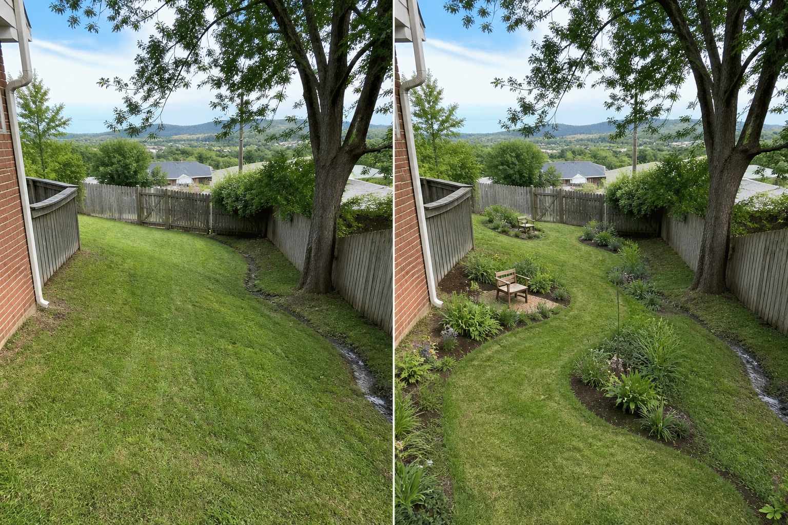

Follow the contour visually
A gentle mown route crosses the grade rather than drawing a straight fall line downhill.
Observe where water travels, where the ground is already gentle enough to pause, and which route follows the contour. Keep early concepts reversible; grading, retaining, steps, drainage, and erosion control require site-specific professional judgment.
Editorially reviewed August 14, 2026.
This AI-generated comparison is visual inspiration, not a measured plan, specification, safety assessment, cost estimate, local approval, plant recommendation, or construction guarantee.

A gentle mown route crosses the grade rather than drawing a straight fall line downhill.
Movable pause points sit only where the image already appears calmer; no level platform is invented.
Planting groups follow contour bands while leaving the water route and tree base visible.
The concept keeps the full grade, fence, gate, tree, house edge, drainage trace, and views. It does not flatten, terrace, retain, excavate, redirect water, or claim that planting stabilizes the slope.
Record doors, gates, paths, furniture movement, utilities, drains, roots, and maintenance access. Do not infer clearance from the image.
Note direct sun, shade, wind, overlooking, and views from inside across more than one time and season before choosing materials or plants.
Locate falls, low points, downpipes, drains, and recurring wet areas. Preserve existing outlets and seek appropriate advice before changing runoff or levels.
Check permissions, product information, plant suitability, mature size, toxicity, invasiveness, upkeep, and any safety requirements for the actual site.
Do not infer slope, soil, erosion risk, drainage capacity, or safe footing from a picture. Avoid cutting benches, adding walls, redirecting runoff, or loading an edge without design. Stop for erosion, instability, persistent water, retaining work, steps, tree roots, or any grade change.
Document levels, soil, runoff, erosion, access, utilities, and trees with appropriate site information before choosing a layout.
The image is not a retaining or drainage design. Terracing can affect stability and water and needs appropriate local assessment.
You can compare viewpoints, broad planting bands, and movable uses in already suitable areas, provided they do not disturb soil, roots, runoff, or access.
Upload a level, wide photo to compare restrained concepts before making physical changes.
AI-generated visualizations are concepts. Verify measurements, conditions, drainage, access, structure, utilities, local rules, product information, plant suitability, and professional requirements before buying or building.